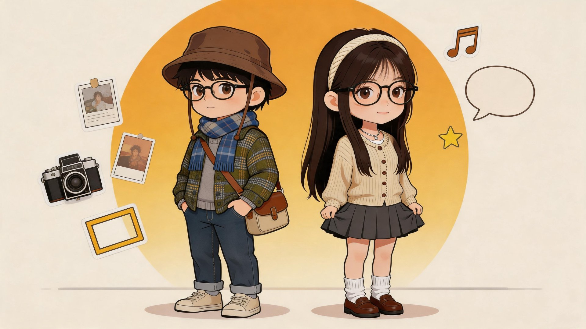
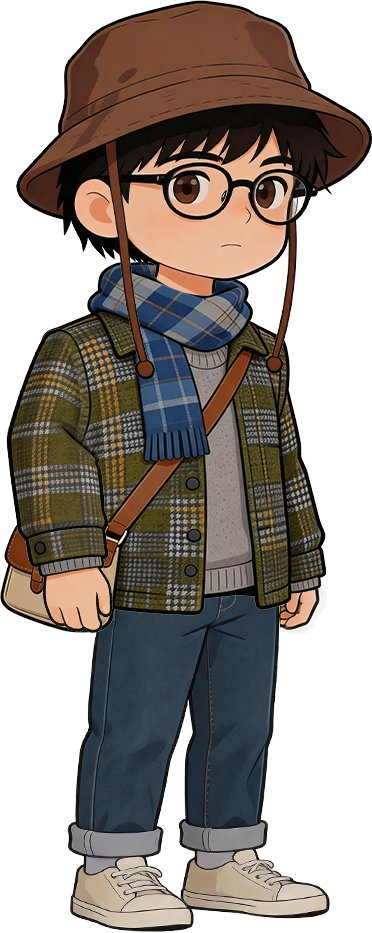

Coopanion OS · 正在开机

老孙不会拍 × 思语
一个桌宠 和 他的制造者
桌宠形象 · 技能插件 · 算法公开 · 带它回家
两套形象，同一个宇宙

老孙
高冷摄影师 · 口头禅「…」
点我翻面 →
档案 · 老孙
思语
卖萌桌宠 · 口头禅「萌妹拯救世界」
点我翻面 →
档案 · 思语
他们真的住在页面里：安安静静待着，会眨眼、会发呆 —— 点点看，两个人反应不一样。
桌宠的技能背包，点开每一扇窗
从 C 形小东西，进化成会卖萌的分身
C 形小身体
Coopanion 本体 · 住在屏幕底边
两只圆眼 · 两条短腿 · 头顶气泡
Q 版分身
思语 · 数字IP形象
发箍 + 眼镜 + 会干活
合体海报
一个桌宠和他的制造者
同框出道
把桌宠的大脑和外形，一并交到你手上
网页里的思语只是预览——Coopanion 桌宠软件才是她真正的家
一只叫 Coo 的小家伙住在屏幕底边：走来走去、用气泡和你说话、按住说话键听你讲。接上大模型后，它记得你说过的话——这不是屏保，是一个住在桌面上的 AI 伙伴。
应用免费开源（AGPL-3.0），支持 Windows / macOS / Linux；模型服务按量计费，电脑操作权限默认全部关闭。
装好后在「装扮」里导入本站的思语形象包，网页上的她就住进你的电脑了。
网页里的思语只是预览 —— 想让她真的住进你的电脑吗？